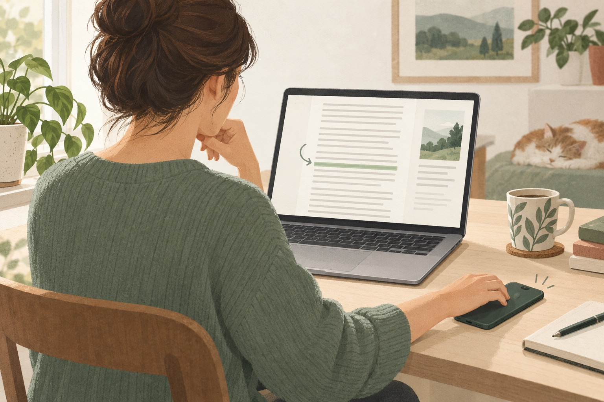

Reading situations
Keep losing your place while reading online?
You come back from a message, look at the article, and recognise every sentence. You just cannot remember which one you were reading.

So you start near the top of the paragraph. Halfway through, a phrase sounds familiar. Did you read this already, or only skim it? You move down, then back up. The article is interesting; finding your place is the part that keeps getting in the way.
A line guide gives that small task somewhere to live on the page. Instead of asking your memory to hold both the argument and your exact position, you leave a visible place to return to.
Give your eyes a line to come back to
A reading ruler is a visual guide for following text. In LineCheck, the current line stays clear while surrounding text dims. You move the guide with the keyboard, so the next line appears when you choose to move on.
Try it on an ordinary web article with several paragraphs. Start Focus from the extension, then read the current line before pressing the down arrow. There is no timer to keep up with. If the sentence runs onto the next line, keep moving until you have finished the thought.
What to do when you need to scroll or look away
Before switching to another tab, finish the sentence you are in. You can mark the line you have reviewed with Enter. When you return, the visible mark is a reference point; it does not need to mean that you memorised everything above it.
If you lose the thread, move up to the previous sentence rather than starting the entire paragraph again by habit. Read enough context to reconnect the idea, then continue. The purpose of the guide is to make that choice deliberate, not to stop you from rereading.
Try one paragraph before changing your whole routine
- Pick an article you actually want to finish, not a speed-reading test.
- Start Focus and use the up and down arrows to follow the text.
- When a passage deserves another look, press F to flag it instead of resolving it immediately.
- At the end of the paragraph, press Esc to see the page and your marks together.
Ask a small, observable question: did you spend less effort searching for the next line? If the isolated view makes it harder to connect sentences, leave Focus and read the paragraph normally. You can use the guide only for the dense sections.
Keep your place without turning reading into a checklist
Not every line needs a green mark. On an article you read for pleasure, the guide may be enough. On a page you will discuss later, a few red flags can keep questions visible without making every sentence feel like work.
Keep the goal small: finish the next thought without another search for where it began. Once you are back inside the argument, the guide can become a quiet reference rather than another thing to manage.